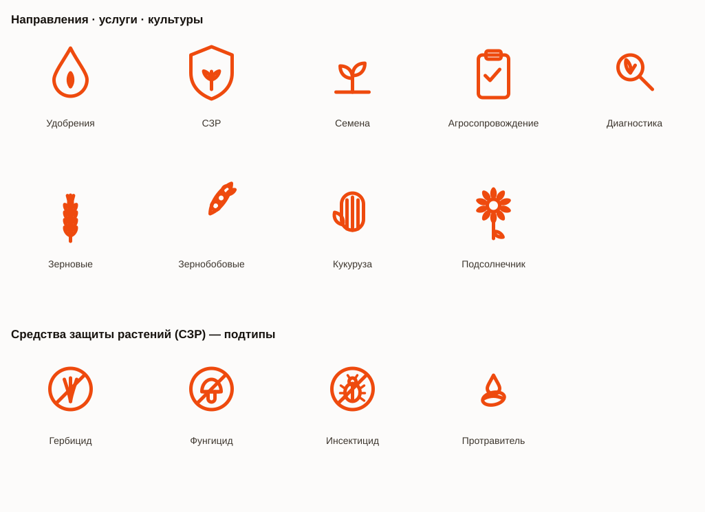
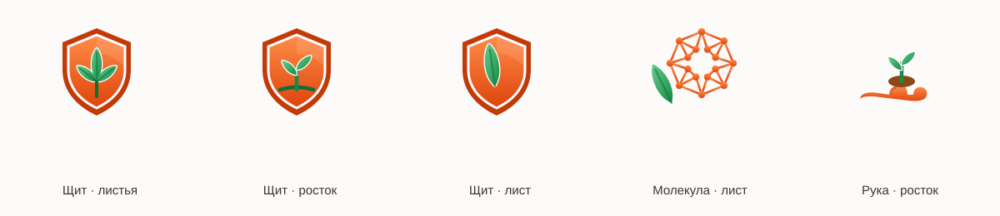

Иконки «Сатурн» — единый лист
Монолинейный набор · подтипы СЗР · стилевая эксплорация · эмблемы. Вектор (SVG), параметрические: цвет и размер меняются в коде.
1 · Монолинейный набор — направления, услуги, культуры + подтипы СЗР

2 · Стилевая эксплорация — A плитка · B градиент · C дуоцвет-контур · D слои
3 · Эмблемы (эко-щиты) — стиль B, оранжевый + зелёный

4 · Эко-щит — реплика референса (серебро + зелёный)